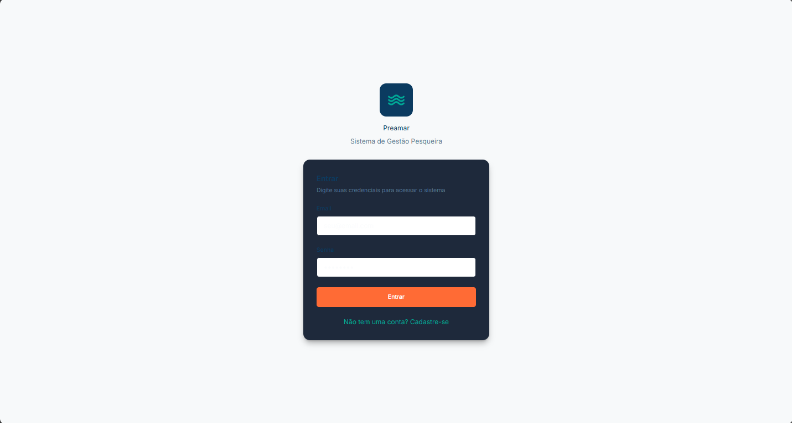
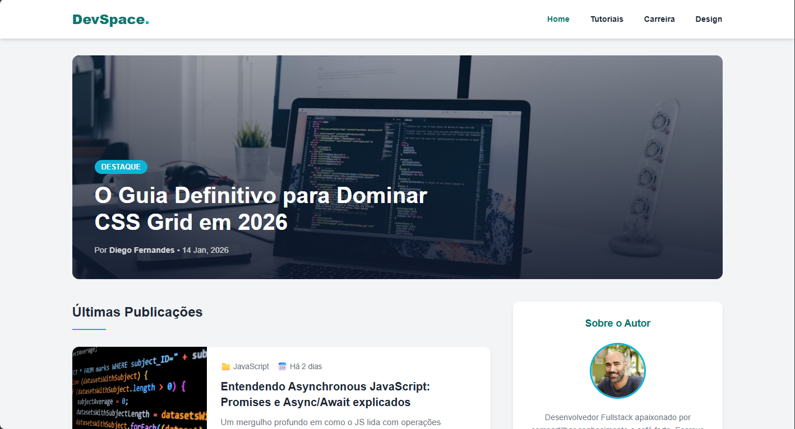
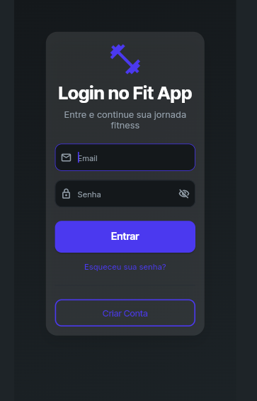

Preamar
Aplicação web focada no gerenciamento e processamento de dados do setor pesqueiro, contando com um backend estruturado para manipular e organizar informações de maneira eficiente.
Sou Técnico em TI pelo IFPB e Desenvolvedor Web pelo Senac. Multicampeão da OBR, atuo criando experiências digitais intuitivas dominando tecnologias como JavaScript, TypeScript, Python, C++ e o ecossistema React/Next.js.
Minha jornada na tecnologia começou com a lógica e a resolução de problemas complexos, o que me levou a ser multicampeão da OBR (Olimpíada Brasileira de Robótica) com projetos envolvendo Arduino, Raspberry Pi e Visão Computacional. Essa base sólida evoluiu para uma carreira técnica formal, e atualmente curso o Bacharelado em Engenharia de Software no IFPB - Campus João Pessoa.
Atuo como desenvolvedor Fullstack, construindo desde interfaces responsivas e acessíveis no Figma, até a construção de APIs robustas utilizando Node.js e bancos de dados SQL/NoSQL. Minha abordagem combina atenção minuciosa aos detalhes técnicos com uma forte compreensão das necessidades do usuário.
Estou sempre em busca de otimizar rotinas e entregar soluções digitais de alto impacto, aplicando metodologias ágeis para garantir qualidade e performance do início ao fim do projeto.

Aplicação web focada no gerenciamento e processamento de dados do setor pesqueiro, contando com um backend estruturado para manipular e organizar informações de maneira eficiente.

Blog pessoal sobre desenvolvimento web

Aplicativo mobile idealizado e desenhado do zero para auxiliar na organização de rotinas e acompanhamento de hábitos diários. O projeto contemplou desde a identidade visual até a lógica interna.
Estou aberto a novas oportunidades e conexões. Se quiser discutir um projeto, compartilhar ideias sobre desenvolvimento de software ou apenas tomar um café virtual, é só me chamar!